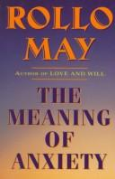

《焦虑的意义》
书·Rollo May, 1950·The Meaning of Anxiety

罗洛·梅对焦虑的存在主义解读。
- 作者
- Rollo May
- 年份
- 1950
- 难度
- 进阶
- 类型
- 理论原著
- 所属学派
- 存在主义心理治疗
版本
- 中文版 《焦虑的意义》 【美】罗洛·梅 · 程璇 / 郑世彦 译 · 浙江教育出版社 · 2023 豆瓣 8.9 分（218 人评价） 豆瓣页面 ↗
- 英文版 The Meaning of Anxiety Rollo May · W. W. Norton, revised edition · 1977 Open Library ↗